San Miguel de Allende
San Miguel de Allende is a historic city located in the state of Guanajuato, Mexico. It is widely recognized as one of the most beautiful and culturally rich cities in the country. Its well-preserved colonial architecture, colorful streets, and artistic atmosphere have made it an international destination.
The city was founded in the 16th century and played an important role in Mexico’s independence movement. Today, San Miguel de Allende is a UNESCO World Heritage Site and a symbol of Mexican history and identity.
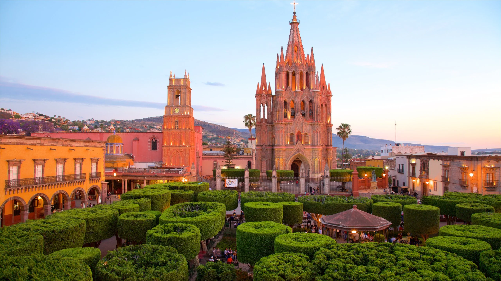
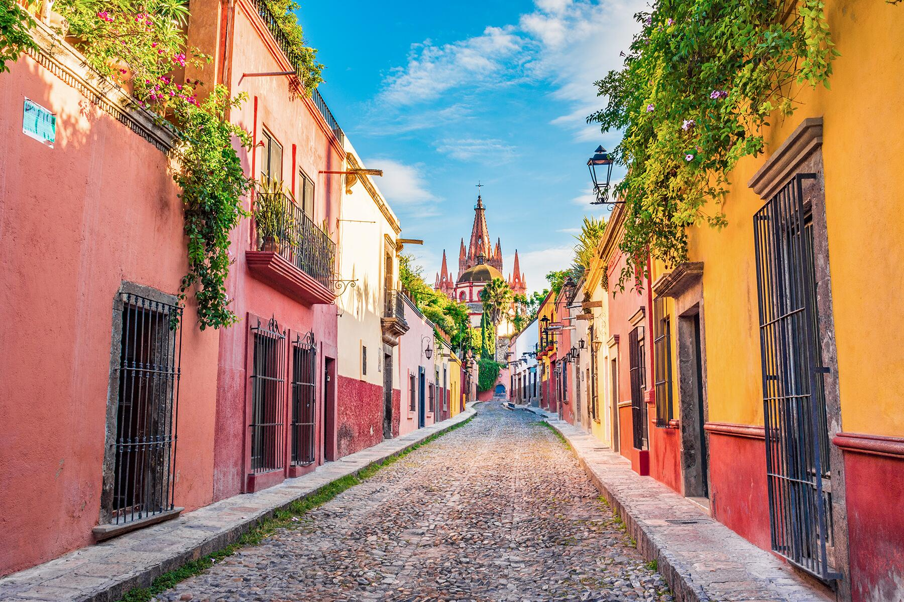
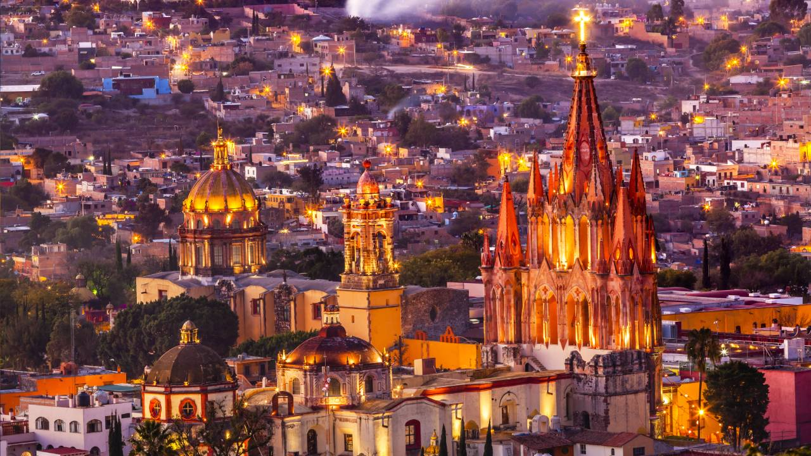
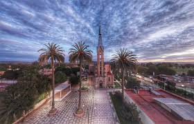
Visitors from all over the world come to enjoy its relaxed lifestyle, cultural events, local traditions, and friendly community. San Miguel de Allende combines history, art, and modern life in a unique way.
Walking through the city allows people to experience museums, art galleries, traditional markets, and historic buildings that tell the story of Mexico’s past while embracing creativity and innovation.
Tourism
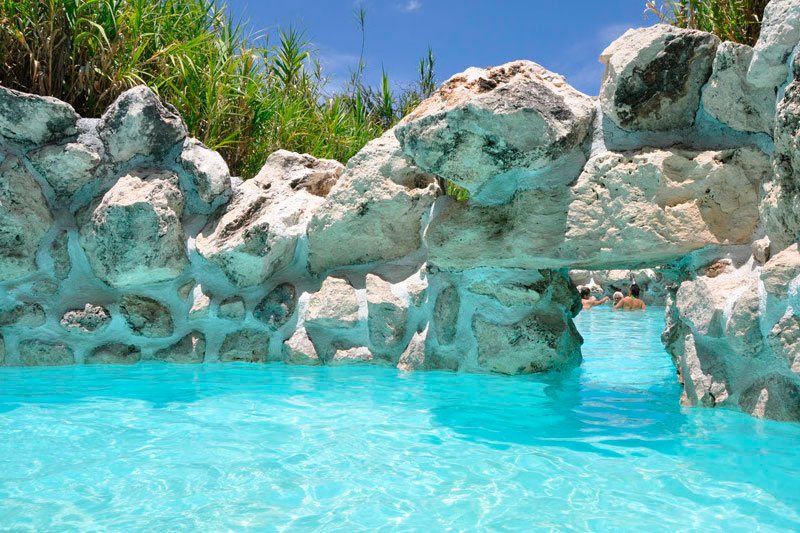
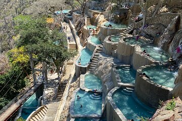
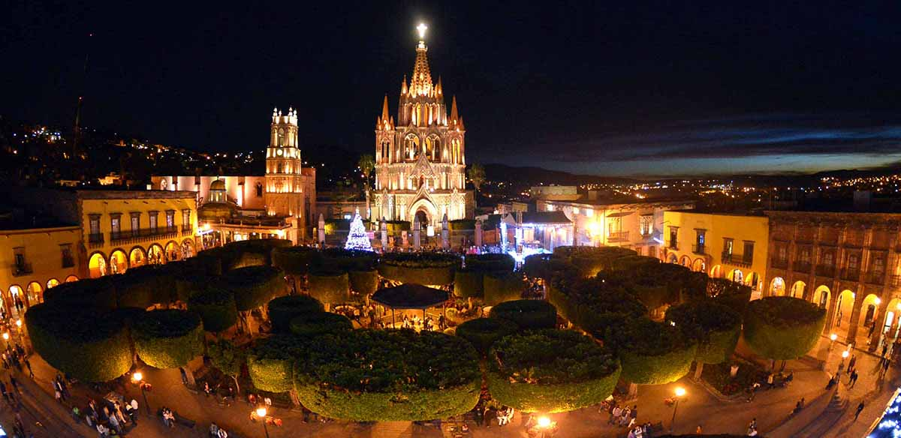
Tourism is one of the main attractions of San Miguel de Allende. The city offers historical landmarks such as the Parroquia de San Miguel Arcángel, museums, viewpoints, and colonial plazas.
Visitors can explore the historic center, enjoy walking tours, visit craft shops, and discover the cultural heritage that defines the city’s identity.
Gastronomy
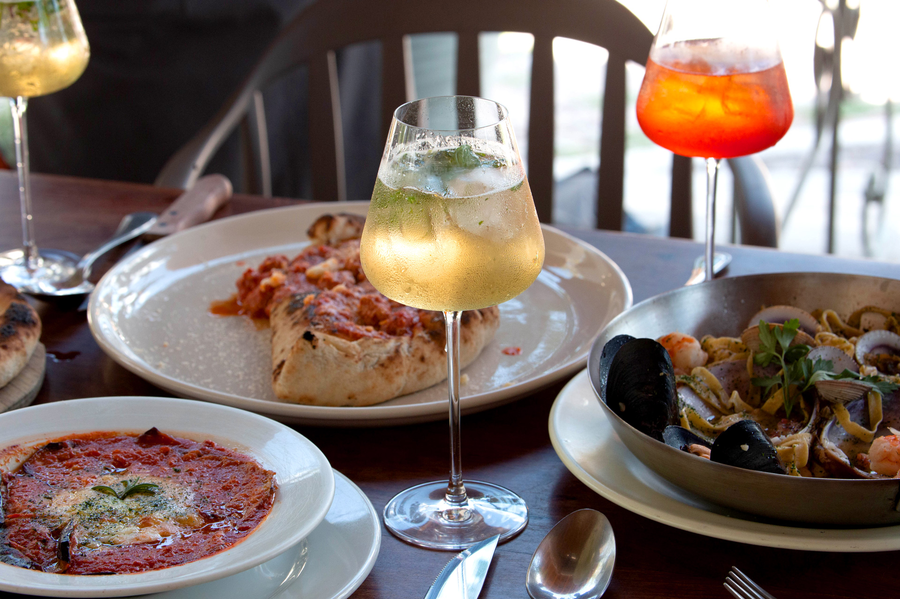

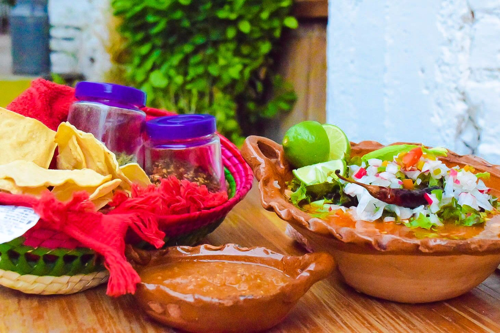
San Miguel de Allende is famous for its diverse gastronomy. The city offers traditional Mexican dishes such as enchiladas, tacos, and tamales, as well as international cuisine.
Restaurants range from street food stalls to fine dining experiences, making the city an important culinary destination.
Culture
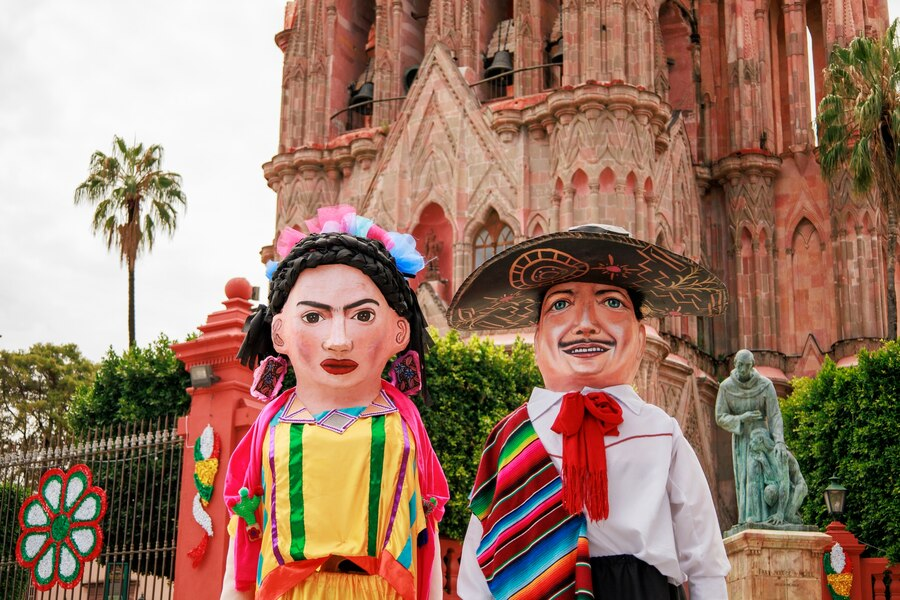
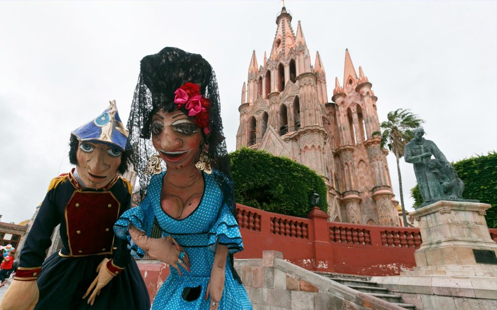
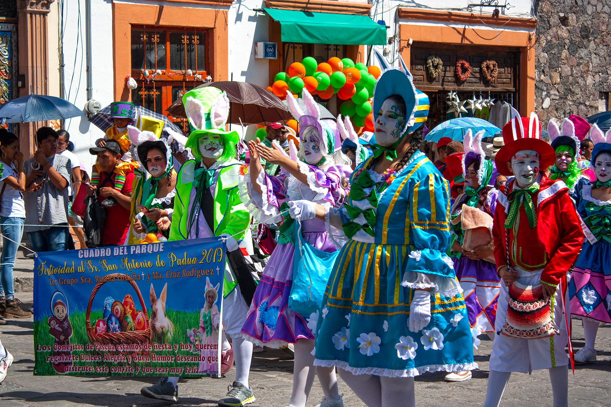
Culture is a fundamental part of life in San Miguel de Allende. The city hosts art festivals, music events, traditional celebrations, and cultural exhibitions throughout the year.
It is also home to art schools, creative communities, and international artists who contribute to its vibrant cultural environment.
About Us
This website was created by Eduardo Misael, Angélica, and Diego as part of an English class project. The main goal of this website is to present San Miguel de Allende and highlight its history, culture, gastronomy, and importance as a tourist destination.
The website was developed using HTML and CSS, applying the previous knowledge acquired during a basic web development course. Through this project, we practiced web structure, design, organization of content, and visual presentation in English.
This project represents both a cultural presentation and a technical exercise, combining language learning with technology skills to create an informative and visually appealing website.